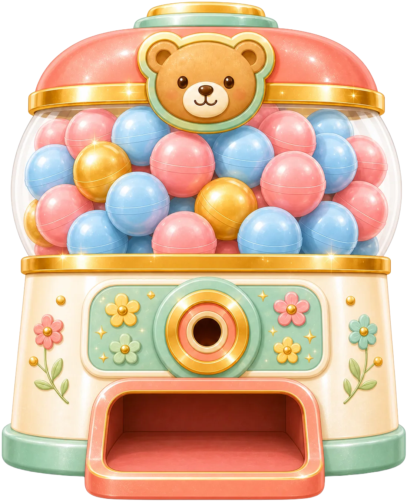

すうじを いれて
どんぐりの かずを かえられるよ
テスト用にシールを
まとめて ふやせるよ
スタッフ用の機能トグル
(staging + manage 解錠時のみ反映)
機能トグルは まだ ないよ
あたらしい おしらせは ありません。

１にち１かい まわせるよ
したの どちらかで
book メンバーが ひらくよ
えほんの うらに かいてある
あいことばを いれてね
えほんの うらを みてね
Amazonで かった ひとは
ちゅうもんばんごうを いれてね
3けた-7けた-7けた の すうじ
えほんを よんだひとなら わかる クイズ
ひらがな・カタカナ・かんじ どれでも OK
あたらしい ステージや
あそびが ひらいたよ！